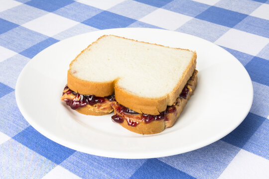

Pb&j

Description
Peanut butter and jelly sandwiches, also commonly known as pb&js, are a popular sandwich consisting of bread, peanut butter, and jelly
Ingredients
- bread
- peanut butter
- jelly
Steps
- Get 2 pieces of bread
- On one piece of bread, spread peanut butter evenly
- On the other piece of bread, evenly spread your favorite flavor of jelly
- Combine the 2 to make a sandwich